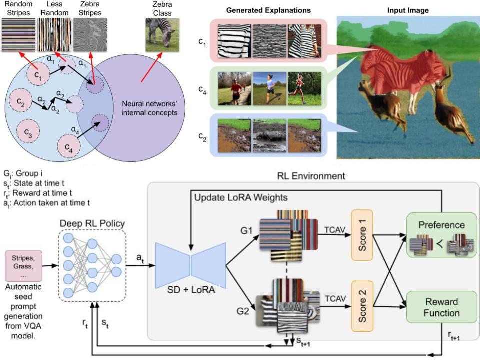

Explainable Concept Generation through Vision-Language Preference Learning for Understanding Neural Networks' Internal Representations

Summary
We propose RLPO, a reinforcement learning preference optimization method that frames concept-based explanation as an image generation problem, fine-tuning a vision-language generative model to automatically discover interpretable concepts a network has learned — including concepts difficult or impossible for humans to specify in advance.
BibTeX
@inproceedings{taparia2025explainable,
title={Explainable Concept Generation through Vision-Language Preference Learning for Understanding Neural Networks' Internal Representations},
author={Taparia, Aditya and Sagar, Som and Senanayake, Ransalu},
booktitle={Proceedings of the 42nd International Conference on Machine Learning},
year={2025}
}